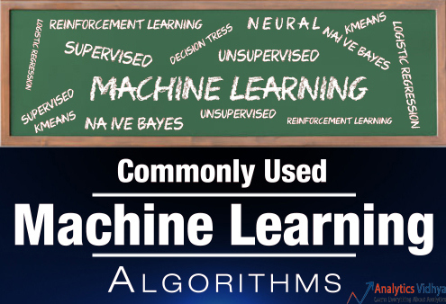
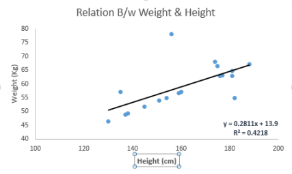
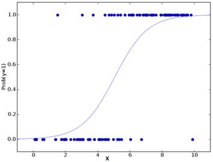
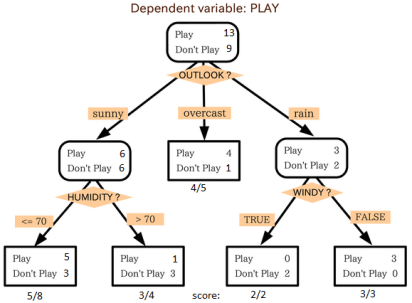
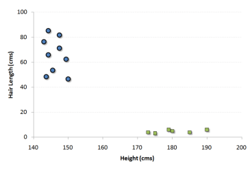
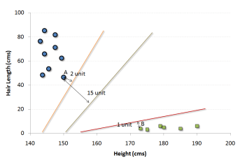
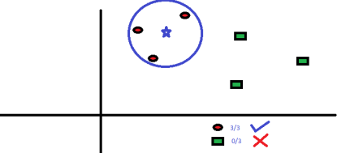
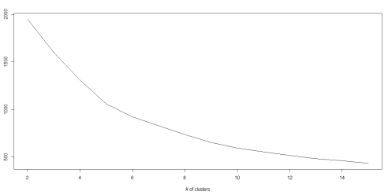

analyticsvidhya网站有一些非常好的机器学习的文章，这是其中的一篇。
原文出处: Essentials of Machine Learning Algorithms,
国内有人翻译了，可以移步：10 种机器学习算法的要点
Introduction
Google’s self-driving cars and robots get a lot of press, but the company’s real future is in machine learning, the technology that enables computers to get smarter and more personal.
– Eric Schmidt (Google Chairman)
We are probably living in the most defining period of human history. The period when computing moved from large mainframes to PCs to cloud. But what makes it defining is not what has happened, but what is coming our way in years to come.
What makes this period exciting for some one like me is the democratization of the tools and techniques, which followed the boost in computing. Today, as a data scientist, I can build data crunching machines with complex algorithms for a few dollors per hour. But, reaching here wasn’t easy! I had my dark days and nights.
Who can benefit the most from this guide?
What I am giving out today is probably the most valuable guide, I have ever created.
(这一篇指南，可能是我写过的最有价值的指南)
The idea behind creating this guide is to simplify the journey of aspiring data scientists and machine learning enthusiasts across the world. Through this guide, I will enable you to work on machine learning problems and gain from experience. I am providing a high level understanding about various machine learning algorithms along with R & Python codes to run them. These should be sufficient to get your hands dirty.

I have deliberately skipped the statistics behind these techniques, as you don’t need to understand them at the start. So, if you are looking for statistical understanding of these algorithms, you should look elsewhere. But, if you are looking to equip yourself to start building machine learning project, you are in for a treat.
Broadly, there are 3 types of Machine Learning Algorithms..
1 Supervised Learning
监督式学习
How it works: This algorithm consist of a target / outcome variable (or dependent variable) which is to be predicted from a given set of predictors (independent variables). Using these set of variables, we generate a function that map inputs to desired outputs. The training process continues until the model achieves a desired level of accuracy on the training data. Examples of Supervised Learning: Regression, Decision Tree, Random Forest, KNN, Logistic Regression etc. (回归、决策树、随机森林、K–近邻算法、逻辑回归等)
2 Unsupervised Learning
非监督式学习
How it works: In this algorithm, we do not have any target or outcome variable to predict / estimate. It is used for clustering population in different groups, which is widely used for segmenting customers in different groups for specific intervention. Examples of Unsupervised Learning: Apriori algorithm, K-means. (关联算法, K–均值算法)
3 Reinforcement Learning
强化学习
How it works: Using this algorithm, the machine is trained to make specific decisions. It works this way: the machine is exposed to an environment where it trains itself continually using trial and error. This machine learns from past experience and tries to capture the best possible knowledge to make accurate business decisions. Example of Reinforcement Learning: Markov Decision Process
List of Common Machine Learning Algorithms
Here is the list of commonly used machine learning algorithms. These algorithms can be applied to almost any data problem:
- Linear Regression (线性回归)
- Logistic Regression (逻辑回归)
- Decision Tree (决策树)
- SVM (支持向量机)
- Naive Bayes (朴素贝叶斯)
- KNN (K最近邻算法)
- K-Means (K均值算法)
- Random Forest (随机森林算法)
- Dimensionality Reduction Algorithms (降维算法)
- Gradient Boost & Adaboost
1 Linear Regression
It is used to estimate real values (cost of houses, number of calls, total sales etc.) based on continuous variable(s). Here, we establish relationship between independent and dependent variables by fitting a best line. This best fit line is known as regression line and represented by a linear equation Y= a *X + b.
The best way to understand linear regression is to relive this experience of childhood. Let us say, you ask a child in fifth grade to arrange people in his class by increasing order of weight, without asking them their weights! What do you think the child will do? He / she would likely look (visually analyze) at the height and build of people and arrange them using a combination of these visible parameters. This is linear regression in real life! The child has actually figured out that height and build would be correlated to the weight by a relationship, which looks like the equation above.
In this equation:
- Y – Dependent Variable
- a – Slope
- X – Independent variable
- b – Intercept
These coefficients a and b are derived based on minimizing the sum of squared difference of distance between data points and regression line.
Look at the below example. Here we have identified the best fit line having linear equation y=0.2811x+13.9. Now using this equation, we can find the weight, knowing the height of a person.

Linear Regression is of mainly two types: Simple Linear Regression and Multiple Linear Regression. Simple Linear Regression is characterized by one independent variable. And, Multiple Linear Regression(as the name suggests) is characterized by multiple (more than 1) independent variables. While finding best fit line, you can fit a polynomial or curvilinear regression. And these are known as polynomial or curvilinear regression.
Python Code
|
|
R
|
|
2 Logistic Regression
Don’t get confused by its name! It is a classification not a regression algorithm. It is used to estimate discrete values ( Binary values like 0/1, yes/no, true/false ) based on given set of independent variable(s). In simple words, it predicts the probability of occurrence of an event by fitting data to a logit function. Hence, it is also known as logit regression. Since, it predicts the probability, its output values lies between 0 and 1 (as expected).
Again, let us try and understand this through a simple example.
Let’s say your friend gives you a puzzle to solve. There are only 2 outcome scenarios – either you solve it or you don’t. Now imagine, that you are being given wide range of puzzles / quizzes in an attempt to understand which subjects you are good at. The outcome to this study would be something like this – if you are given a trignometry based tenth grade problem, you are 70% likely to solve it. On the other hand, if it is grade fifth history question, the probability of getting an answer is only 30%. This is what Logistic Regression provides you.
Coming to the math, the log odds of the outcome is modeled as a linear combination of the predictor variables.
|
|
Above, p is the probability of presence of the characteristic of interest. It chooses parameters that maximize the likelihood of observing the sample values rather than that minimize the sum of squared errors (like in ordinary regression).
Now, you may ask, why take a log? For the sake of simplicity, let’s just say that this is one of the best mathematical way to replicate a step function. I can go in more details, but that will beat the purpose of this article.

Python Code
|
|
R
|
|
Furthermore...
There are many different steps that could be tried in order to improve the model:
- including interaction terms
- removing features
- regularization techniques
- using a non-linear model
3 Decision Tree
This is one of my favorite algorithm and I use it quite frequently. It is a type of supervised learning algorithm that is mostly used for classification problems. Surprisingly, it works for both categorical and continuous dependent variables. In this algorithm, we split the population into two or more homogeneous sets. This is done based on most significant attributes/ independent variables to make as distinct groups as possible. For more details, you can read: Decision Tree Simplified.

In the image above, you can see that population is classified into four different groups based on multiple attributes to identify ‘if they will play or not’. To split the population into different heterogeneous groups, it uses various techniques like Gini, Information Gain, Chi-square, entropy.
The best way to understand how decision tree works, is to play Jezzball – a classic game from Microsoft (image below). Essentially, you have a room with moving walls and you need to create walls such that maximum area gets cleared off with out the balls.
So, every time you split the room with a wall, you are trying to create 2 different populations with in the same room. Decision trees work in very similar fashion by dividing a population in as different groups as possible.
More: Simplified Version of Decision Tree Algorithms
Python Code
|
|
R
|
|
4 SVM (Support Vector Machine)
It is a classification method. In this algorithm, we plot each data item as a point in n-dimensional space (where n is number of features you have) with the value of each feature being the value of a particular coordinate.
For example, if we only had two features like Height and Hair length of an individual, we’d first plot these two variables in two dimensional space where each point has two co-ordinates (these co-ordinates are known as Support Vectors)

Now, we will find some line that splits the data between the two differently classified groups of data. This will be the line such that the distances from the closest point in each of the two groups will be farthest away.

In the example shown above, the line which splits the data into two differently classified groups is the black line, since the two closest points are the farthest apart from the line. This line is our classifier. Then, depending on where the testing data lands on either side of the line, that’s what class we can classify the new data as.
More: Simplified Version of Support Vector Machine
Think of this algorithm as playing JezzBall in n-dimensional space. The tweaks in the game are:
- You can draw lines / planes at any angles (rather than just horizontal or vertical as in classic game)
- The objective of the game is to segregate balls of different colors in different rooms.
- And the balls are not moving.
Python Code
|
|
R
|
|
5 Naive Bayes
It is a classification technique based on Bayes’ theorem with an assumption of independence between predictors. In simple terms, a Naive Bayes classifier assumes that the presence of a particular feature in a class is unrelated to the presence of any other feature. For example, a fruit may be considered to be an apple if it is red, round, and about 3 inches in diameter. Even if these features depend on each other or upon the existence of the other features, a naive Bayes classifier would consider all of these properties to independently contribute to the probability that this fruit is an apple.
Naive Bayesian model is easy to build and particularly useful for very large data sets. Along with simplicity, Naive Bayes is known to outperform even highly sophisticated classification methods.
Bayes theorem provides a way of calculating posterior probability P(c|x) from P(c), P(x) and P(x|c). Look at the equation below:
Here,
- P(c|x) is the posterior probability of class (target) given predictor (attribute).
- P(c) is the prior probability of class.
- P(x|c) is the likelihood which is the probability of predictor given class.
- P(x) is the prior probability of predictor.
Example: Let’s understand it using an example. Below I have a training data set of weather and corresponding target variable ‘Play’. Now, we need to classify whether players will play or not based on weather condition. Let’s follow the below steps to perform it.
Step 1: Convert the data set to frequency table
Step 2: Create Likelihood table by finding the probabilities like Overcast probability = 0.29 and probability of playing is 0.64.
Step 3: Now, use Naive Bayesian equation to calculate the posterior probability for each class. The class with the highest posterior probability is the outcome of prediction.
Problem: Players will pay if weather is sunny, is this statement is correct?
We can solve it using above discussed method, so P(Yes | Sunny) = P( Sunny | Yes) * P(Yes) / P (Sunny)
Here we have P (Sunny |Yes) = 3/9 = 0.33, P(Sunny) = 5/14 = 0.36, P( Yes)= 9/14 = 0.64
Now, P (Yes | Sunny) = 0.33 * 0.64 / 0.36 = 0.60, which has higher probability.
Naive Bayes uses a similar method to predict the probability of different class based on various attributes. This algorithm is mostly used in text classification and with problems having multiple classes.
Python Code
|
|
R
|
|
6 KNN (K- Nearest Neighbors)
It can be used for both classification and regression problems. However, it is more widely used in classification problems in the industry. K nearest neighbors is a simple algorithm that stores all available cases and classifies new cases by a majority vote of its k neighbors. The case being assigned to the class is most common amongst its K nearest neighbors measured by a distance function.
These distance functions can be Euclidean, Manhattan, Minkowski and Hamming distance. First three functions are used for continuous function and fourth one (Hamming) for categorical variables. If K = 1, then the case is simply assigned to the class of its nearest neighbor. At times, choosing K turns out to be a challenge while performing KNN modeling.
More: Introduction to k-nearest neighbors : Simplified.

KNN can easily be mapped to our real lives. If you want to learn about a person, of whom you have no information, you might like to find out about his close friends and the circles he moves in and gain access to his/her information!
Things to consider before selecting KNN:
- KNN is computationally expensive
- Variables should be normalized else higher range variables can bias it
- Works on pre-processing stage more before going for KNN like outlier, noise removal
Python Code
|
|
R
|
|
7 K-Means
It is a type of unsupervised algorithm which solves the clustering problem. Its procedure follows a simple and easy way to classify a given data set through a certain number of clusters (assume k clusters). Data points inside a cluster are homogeneous and heterogeneous to peer groups.
Remember figuring out shapes from ink blots? k means is somewhat similar this activity. You look at the shape and spread to decipher how many different clusters / population are present!
How K-means forms cluster:
- K-means picks k number of points for each cluster known as centroids.
- Each data point forms a cluster with the closest centroids i.e. k clusters.
- Finds the centroid of each cluster based on existing cluster members. Here we have new centroids.
- As we have new centroids, repeat step 2 and 3. Find the closest distance for each data point from new centroids and get associated with new k-clusters. Repeat this process until convergence occurs i.e. centroids does not change.
How to determine value of K:
In K-means, we have clusters and each cluster has its own centroid. Sum of square of difference between centroid and the data points within a cluster constitutes within sum of square value for that cluster. Also, when the sum of square values for all the clusters are added, it becomes total within sum of square value for the cluster solution.
We know that as the number of cluster increases, this value keeps on decreasing but if you plot the result you may see that the sum of squared distance decreases sharply up to some value of k, and then much more slowly after that. Here, we can find the optimum number of cluster.

Python Code
|
|
R
|
|
8 Random Forest
Random Forest is a trademark term for an ensemble of decision trees. In Random Forest, we’ve collection of decision trees (so known as “Forest”). To classify a new object based on attributes, each tree gives a classification and we say the tree “votes” for that class. The forest chooses the classification having the most votes (over all the trees in the forest).
Each tree is planted & grown as follows:
- If the number of cases in the training set is N, then sample of N cases is taken at random but with replacement. This sample will be the training set for growing the tree.
- If there are M input variables, a number m<<M is specified such that at each node, m variables are selected at random out of the M and the best split on these m is used to split the node. The value of m is held constant during the forest growing.
- Each tree is grown to the largest extent possible. There is no pruning.
For more details on this algorithm, comparing with decision tree and tuning model parameters, I would suggest you to read these articles:
- Introduction to Random forest – Simplified
- Comparing a CART model to Random Forest (Part 1)
- Comparing a Random Forest to a CART model (Part 2)
- Tuning the parameters of your Random Forest model
Python
|
|
R
|
|
9 Dimensionality Reduction Algorithms
In the last 4-5 years, there has been an exponential increase in data capturing at every possible stages. Corporates/ Government Agencies/ Research organisations are not only coming with new sources but also they are capturing data in great detail.
For example: E-commerce companies are capturing more details about customer like their demographics, web crawling history, what they like or dislike, purchase history, feedback and many others to give them personalized attention more than your nearest grocery shopkeeper.
As a data scientist, the data we are offered also consist of many features, this sounds good for building good robust model but there is a challenge. How’d you identify highly significant variable(s) out 1000 or 2000? In such cases, dimensionality reduction algorithm helps us along with various other algorithms like Decision Tree, Random Forest, PCA, Factor Analysis, Identify based on correlation matrix, missing value ratio and others.
To know more about this algorithms, you can read “Beginners Guide To Learn Dimension Reduction Techniques“.
Python Code
|
|
R
|
|
10 Gradient Boosting & AdaBoost
GBM & AdaBoost are boosting algorithms used when we deal with plenty of data to make a prediction with high prediction power. Boosting is an ensemble learning algorithm which combines the prediction of several base estimators in order to improve robustness over a single estimator. It combines multiple weak or average predictors to a build strong predictor. These boosting algorithms always work well in data science competitions like Kaggle, AV Hackathon, CrowdAnalytix.
More: Know about Gradient and AdaBoost in detail
Python Code
|
|
R
|
|
GradientBoostingClassifier and Random Forest are two different boosting tree classifier and often people ask about the difference between these two algorithms.
End Notes
By now, I am sure, you would have an idea of commonly used machine learning algorithms. My sole intention behind writing this article and providing the codes in R and Python is to get you started right away. If you are keen to master machine learning, start right away. Take up problems, develop a physical understanding of the process, apply these codes and see the fun!
Did you find this article useful ? Share your views and opinions in the comments section below.